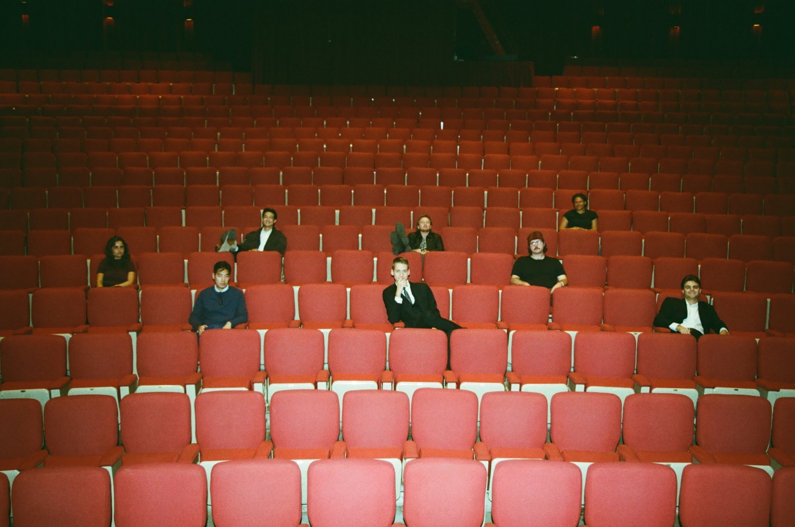
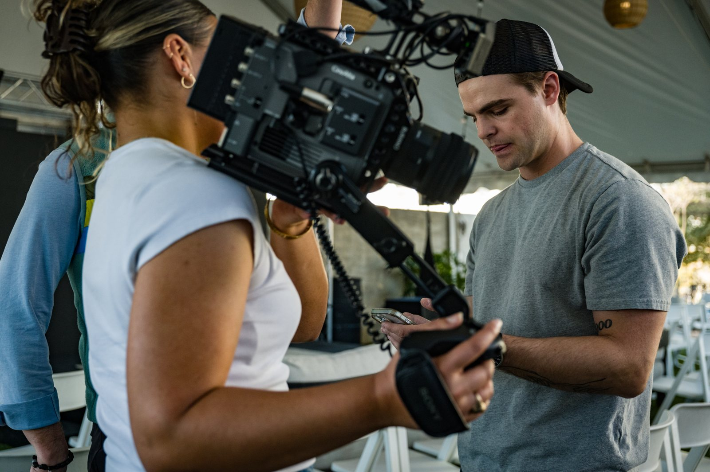
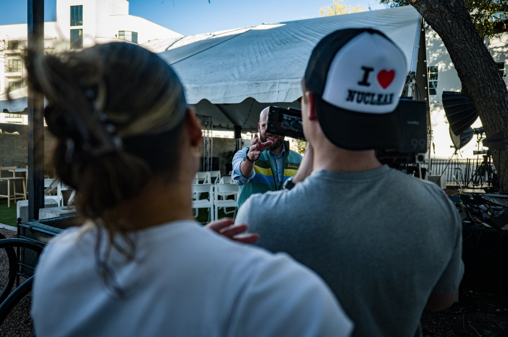

Event Production
2024–
Premieres & Events
Every Story premiere, produced end-to-end — venues, contracts, insurance, rentals, merch, run-of-show. New Space sold out 400+ seats. Too Cheap to Meter drew 300. Planet sold out the Palace of Fine Arts at 960. The Greatest Lie brought 600. Over 2,200 seats filled across four premieres.
My role: produced all four premieres — 2,200+ seats filled.
- Studio
- Story Co.
- Premieres
- 4 — every one sold out
- Seats filled
- 2,200+
- Venues
- Palace of Fine Arts (960), a.o. — San Francisco & Austin
Moments


